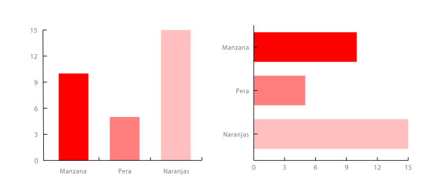
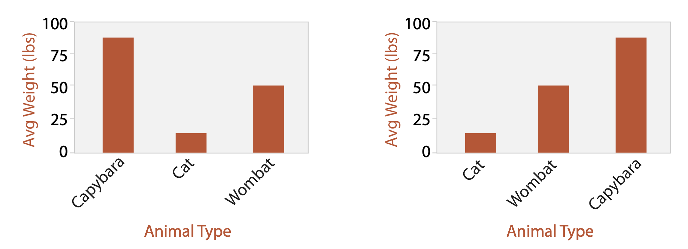
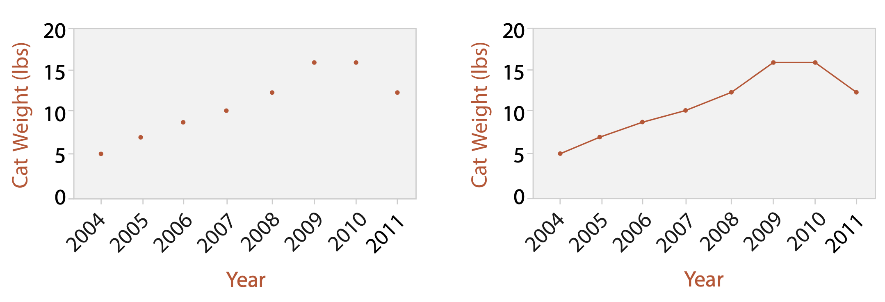
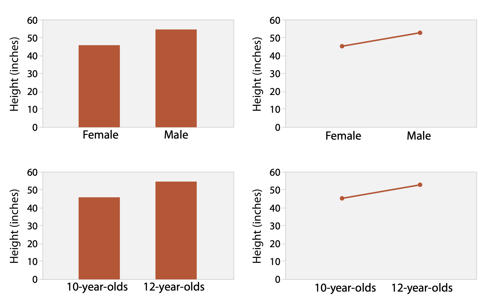

Visualización de datos tabulares
IIC2026
Definición de regiones categóricas
Visualización de datos tabulares
IIC2026
Codificación de atributos categóricos
- Posición en escala común (magnitud) ❌
- Posición en escala no alineada (magnitud) ❌
- Largo (magnitud) ❌
Regiones espaciales ✅
Áreas distinguibles, con límites y contiguas entre ellas.
Definición de regiones categóricas
- Separar regiones ✂️
- Alinear regiones 📐
- Ordenar regiones 📶
Una llave - Organización de lista
Gráfico de barra (Bar chart)

(Fuente imagen: DataViz Catalog)
| Idiom | Gráfico de barra. |
| Qué: Datos | Tabular: un atributo de valor y cuantitativo; un atributo llave categórico. |
| Cómo: Codificar | Marcas de línea. Expresar valor de atributo cuantitativo con largo de barra, separar regiones mediante artibuto de llave. |
| Porqué: Tareas | Ubicar y comparar valores. |
| Escala | Docenas a cientos de llaves. |
Gráfico de barra (Bar chart)

(Fuente: Libro "Visualization, Analysis and Design" )
Gráfico de barras apiladas (Stacked bar chart)

(Fuente imagen: DataViz Catalog)
| Idiom | Gráfico de barras apiladas. |
| Qué: Datos | Tabular: un atributo de valor y cuantitativo; dos atributos llave categóricos y de llave en conjunto. |
| Cómo: Codificar | Glifo de barra con sub componentes codificados por largo para cada categoría de de atributo llave secundario. Separar regiones mediante artibuto de llave principal. |
| Porqué: Tareas | Relación parte a total, ubicar valores, encontrar tendencias. |
| Escala | Docenas a cientos de valores en atributo llave principal. Varios hasta una docena para llave secundaria. |
Gráfico de punto y gráfico de línea (Dot chat and line chart )

(Fuente: Libro "Visualization, Analysis and Design" )
| Idiom | Gráfico de punto. |
| Qué: Datos | Tabular: un atributo de valor y cuantitativo; un atributo llave categóricos u ordenado. |
| Cómo: Codificar | Expresar valor de atributo cuantitativo mediante posición y uso de puntos como marca. Separar/ordenar regiones mediante artibuto de llave. |
| Idiom | Gráfico de línea. |
| Qué: Datos | Tabular: un atributo de valor y cuantitativo; un atributo llave ordenado. |
| Cómo: Codificar | Gráfico de punto con marcas de conexión entre puntos. |
| Porqué: Tareas | Mostrar tendencia. |
| Escala | Cientos de valores en atributo llave. |
Gráfico de línea mejor con llave ordenada

(Fuente: Libro "Visualization, Analysis and Design" )